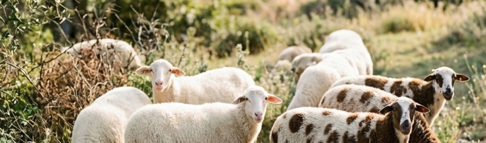

A
a
מיעקב והצאן, דרך מנדל והאפונה, ועד טבלת פאנט והכלאת מבחן
הנושאים במצגת הזו נמצאים במיקוד תשפ״ז: דרך ההורשה של תכונה אחת, היחסים המספריים בין הפנוטיפים, הכלאות מבוקרות, הכלאת מבחן, ומיוזה והפריה.
המושגים: גן · אלל · אלל דומיננטי · אלל רצסיבי · גנוטיפ · פנוטיפ · הומוזיגוט · הטרוזיגוט · זן טהור · P · F₁ · F₂ · הכלאת מבחן · גמטה · זיגוטה
הרבה לפני שידעו מהו DNA, אנשים גידלו צמחים ובעלי חיים, ושמו לב שתכונות עוברות מההורים לצאצאים. מי, לדעתכם, היה הראשון שניסה "לתכנן" צאצאים?
יש מי שמציעים דמות מספר בראשית: יעקב, הרועה של לבן. הוא קיבל שכר לפי צבע הצמר של הטלאים שייוולדו. נקרא את הסיפור, ונבדוק בעיניים של גנטיקאים מה הוא עשה.

יעקב רעה את הצאן של לבן. הם הסכימו שכל שה "נקוד וטלוא" (בעל כתמים) וכל כבש חום שייוולדו מעתה יהיו השכר של יעקב.
באותו יום לבן הוציא מהעדר את כל הטלואים והחומים, הרחיק אותם מרחק שלושה ימים, והשאיר ביד יעקב צאן בצבע אחיד בלבד.
נשאר עדר של כבשים לבנות. האם ייתכן שייוולדו בו טלאים טלואים?
כן, אם בעדר יש כבשים לבנות הטרוזיגוטיות, הנושאות אלל רצסיבי לצמר טלוא. נבדוק בעמודים הבאים.
בראשית ל, לז–לט
יעקב קילף פצלות לבנות במקלות של לבנה, לוז וערמון, והציב אותם בשקתות המים, מול הצאן שבאו לשתות ולהתייחם. לפי הסיפור נולדו טלאים "עקודים, נקודים וטלואים".
בראשית ל, מא–מב
את המקלות הציב רק מול הצאן ה"מקושרות" (לפי רוב הפרשנים: החזקות), ולא מול ה"עטופים" (החלשים). כך הזדווגו פרטים מסוימים ולא אחרים.
בראשית לא, י–יב
בחלום ראה יעקב שהזכרים העולים על הצאן "עקודים, נקודים וברודים", אף שבעדר נראו כולם בצבע אחיד.
האם המקלות יכולים לגרום ללידת טלאים טלואים?
לא. מה שהכבשה רואה בזמן ההזדווגות אינו משנה את האללים בגמטות שלה, ולכן אינו עובר לצאצאים. מה שכן יכול להשפיע: בחירת הפרטים שמזדווגים (סעיף 2), ואללים רצסיביים שהיו בעדר מלכתחילה, בכבשים לבנות הטרוזיגוטיות (סעיף 3).
את התשובות מצא, כעבור אלפי שנים, נזיר בעיר ברין
לפני מנדל הייתה מקובלת ההשערה שתכונות ההורים מתערבבות בצאצא, כמו שני צבעים של צבע.
לפי השערה זו, לזוג סוסים, שחור ולבן, ייוולדו תמיד סייחים אפורים, ולשני צמחים, אחד בעל פרחים סגולים ואחד בעל פרחים לבנים, צאצאים בעלי פרחים בגוון ביניים.
מה היה קורה למגוון התכונות באוכלוסייה אחרי דורות רבים של "ערבוב"?
המגוון היה הולך וקטן, עד שכל הפרטים היו דומים זה לזה. בפועל, בטבע נשמר מגוון גדול של תכונות, ותכונות של סבים מופיעות שוב אצל נכדים. התצפיות אינן תומכות בהשערת הערבוב.
מנדל היה הראשון שתיאר כללים למעבר תכונות מדור לדור, ושהראה שאפשר לנבא את התוצאות בהסתברות. יעקב בחר פרטים; מנדל ניסח חוקיות.
6,022 : 2,001 ≈ 3 : 1
הפנוטיפ שהופיע ב-F₁ נקרא דומיננטי. הפנוטיפ שלא הופיע ב-F₁ והופיע שוב ב-F₂ נקרא רצסיבי.
| תכונה | פנוטיפ דומיננטי | פנוטיפ רצסיבי | יחס |
|---|---|---|---|
| צורת הזרע | 5,474 חלק | 1,850 מקומט | 2.96 : 1 |
| צבע הזרע | 6,022 צהוב | 2,001 ירוק | 3.01 : 1 |
| צבע הפרח | 705 סגול | 224 לבן | 3.15 : 1 |
| צורת התרמיל | 882 נפוח | 299 מקומט | 2.95 : 1 |
| צבע התרמיל | 428 ירוק | 152 צהוב | 2.82 : 1 |
| מיקום הפרח | 651 בצד הגבעול | 207 בקצה הגבעול | 3.14 : 1 |
| אורך הגבעול | 787 ארוך | 277 קצר | 2.84 : 1 |
אף יחס אינו בדיוק 3:1. למה? נחזור לזה בהמשך.
"גורם תורשתי" = גן
"עותק" = אלל
מנדל לא השתמש במונחים "גן" ו"אלל", והם נקבעו זמן רב אחרי מותו. הוא גם לא ידע על קיום כרומוזומים ו-DNA.
מקטע DNA במיקום קבוע בכרומוזום (לוקוס), המקודד לחלבון (או ל-RNA).
דוגמאות: הגן לצבע הזרע באפונה; הגן TYR באדם, המקודד לאנזים טירוזינאז.
גרסה של גן. אללים שונים של אותו גן נבדלים ברצף הנוקלאוטידים, ונמצאים באותו מיקום בכרומוזומים הומולוגיים.
דוגמאות: A לזרע צהוב ו-a לזרע ירוק; אלל תקין ואלל ללבקנות בגן TYR.
גן = המקום והתפקיד. אלל = הגרסה שיושבת במקום הזה.
הרכב האללים של הפרט בגן מסוים.
נרשם באותיות: AA, Aa, aa.
ביטוי התכונה בפרט: מה שאפשר לראות או למדוד.
מושפע מהגנוטיפ, ובחלק מהתכונות גם מתנאי הסביבה.
| יצור ותכונה | גנוטיפ AA | גנוטיפ Aa | גנוטיפ aa |
|---|---|---|---|
| אפונה, צבע הזרע | זרע צהוב | זרע צהוב | זרע ירוק |
| שרקן, צבע הפרווה | שחורה | שחורה | לבנה |
| זבוב הפירות, צורת הכנף | כנף רגילה | כנף רגילה | כנף מנוונת |
| אדם, צבען מלנין | פיגמנטציה תקינה | פיגמנטציה תקינה (נשא) | לבקנות |
שני גנוטיפים שונים יכולים לתת אותו פנוטיפ
פרט ששני האללים שלו בגן הנדון זהים.
AA (הומוזיגוט דומיננטי) או aa (הומוזיגוט רצסיבי). יוצר טיפוס גמטות אחד.
פרט ששני האללים שלו בגן הנדון שונים.
Aa. יוצר שני טיפוסי גמטות ביחס 1:1. כשהאלל הרצסיבי גורם למחלה, ההטרוזיגוט נקרא נשא.
קבוצת פרטים הומוזיגוטים בגן הנבדק. בהכלאה בתוך הזן מתקבלים צאצאים בעלי אותו פנוטיפ.
הזנים של מנדל: אפונה צהובה AA, אפונה ירוקה aa.
"הומוזיגוט" ו"הטרוזיגוט" מתארים גנוטיפ, לא פנוטיפ
אלל שמתבטא בפנוטיפ גם בהומוזיגוט וגם בהטרוזיגוט.
מסומן באות גדולה: A. פנוטיפ דומיננטי: גנוטיפ AA או Aa.
אלל שמתבטא בפנוטיפ רק בהומוזיגוט. בהטרוזיגוט הוא אינו מתבטא בפנוטיפ.
מסומן באות קטנה: a. פנוטיפ רצסיבי: רק גנוטיפ aa.
| יצור | תכונה | פנוטיפ דומיננטי | פנוטיפ רצסיבי |
|---|---|---|---|
| אפונה | צבע הפרח | סגול | לבן |
| אפונה | צורת הזרע | חלק | מקומט |
| שרקן | צבע הפרווה | שחור | לבן |
| ארנב | צבע הפרווה | צבע תקין | לבקן: בלי מלנין, עיניים אדומות |
| זבוב הפירות | צורת הכנף | כנף רגילה | כנף מנוונת, ואין יכולת תעופה |
| כבשים (צאן יעקב) | צבע הצמר | לבן | טלוא (כתמים) |
| עגבנייה | גובה הצמח | גבוה | ננסי |
בכל השורות: ב-F₂ של שני זנים טהורים מתקבל יחס של כ-3 : 1
| אלל דומיננטי | אלל רצסיבי | ולכן בהטרוזיגוט... | |
|---|---|---|---|
| אפונה, צבע הזרע | מקודד לחלבון פעיל, המשתתף בפירוק כלורופיל בזרע המבשיל | מקודד לחלבון לא פעיל; הכלורופיל אינו מתפרק | החלבון הפעיל מאלל אחד מספיק: זרע צהוב |
| אדם, לבקנות | מקודד לטירוזינאז פעיל, המזרז יצירת מלנין | מקודד לטירוזינאז לא פעיל | האנזים מאלל אחד מספיק: פיגמנטציה תקינה |
| אפונה, צורת הזרע | מקודד לאנזים פעיל בבניית עמילן | מקודד לאנזים לא פעיל; מצטבר סוכר, הזרע קולט מים ומתקמט בהתייבשות | האנזים מאלל אחד מספיק: זרע חלק |
בדוגמאות האלה האלל הרצסיבי מקודד לחלבון לא פעיל, והחלבון הפעיל שנוצר מאלל אחד מספיק ליצירת הפנוטיפ הדומיננטי.
אללים אינם "חזקים" ואינם "מנצחים". ההבדל הוא בתוצר החלבוני.
בגרות 2022 שאלה 26 · בגרות 2026 שאלה 24
אחד מן האללים מקודד לחלבון A, הגורם לפירוק חומר הצבע האדום בעלי הכותרת.
| גנוטיפ | בתא | פנוטיפ |
|---|---|---|
| AA | יש חלבון A ← הצבע האדום מתפרק | לבן |
| Aa | יש חלבון A (מאלל אחד) ← הצבע האדום מתפרק | לבן |
| aa | אין חלבון A ← הצבע האדום נשאר | אדום |
"ההטרוזיגוט ורוד". זו השערת הערבוב, והיא לא נובעת מהנתונים. מהנתונים: בתאי Aa נוצר חלבון A, ולכן הפרח לבן. האלל ללבן דומיננטי.
| כתוב במבחן | מה לא נכון | הנוסח הנכון |
|---|---|---|
| "אלל Y לצהוב, אלל G לירוק" | שתי אותיות לגן אחד | אות אחת: Y / y |
| "הגמטה של הפרט היא Aa" | בגמטה אלל אחד | גמטות A ו-a ביחס 1:1 |
| "הפנוטיפ שלו הומוזיגוט" | ערבוב גנוטיפ ופנוטיפ | הפנוטיפ: זרע צהוב. הגנוטיפ: AA |
| "האלל הדומיננטי משתלט על הרצסיבי" | האנשה | החלבון הפעיל מאלל אחד מספיק ליצירת הפנוטיפ |
| "נולד ילד לבקן, ולכן ההסתברות לילד הבא קטנה" | מאורעות בלתי תלויים | בכל היריון שוב 1/4 |
תא הפלואידי: בכל גמטה יש אלל אחד של כל גן.
תא זרע, תא ביצה; באפונה: תאי זרע בגרגירי האבקה, ותא ביצה בשחלה.
התא שנוצר מהתלכדות שתי גמטות בהפריה. בזיגוטה יש שוב שני אללים לכל גן.
| סמל | משמעות |
|---|---|
| P | דור ההורים |
| F₁ | דור הצאצאים הראשון |
| F₂ | דור הצאצאים השני: צאצאים של F₁ × F₁ |
| × | הכלאה |
| ♂ / ♀ | זכר / נקבה |
האללים של גן מסוים נמצאים באותו מיקום בשני כרומוזומים הומולוגיים. בחלוקה הראשונה של המיוזה הכרומוזומים ההומולוגיים נפרדים, ולכן כל גמטה מכילה אלל אחד של כל גן.
הטרוזיגוט Aa יוצר שני טיפוסי גמטות ביחס 1 : 1. הומוזיגוט AA יוצר רק גמטות A.
מנדל הסיק את הכלל הזה בלי לדעת על קיום כרומוזומים
היחידה מתבססת על חומרי מט״ח ומורחבת בחומרים נוספים. על בסיס: מט״ח, "תורשה מנדלית: מונחי יסוד", שאלה 1
על בסיס: מט״ח, "תורשה מנדלית: מונחי יסוד", שאלה 2
Aa × Aa
| A | a | |
|---|---|---|
| A | AA | Aa |
| a | Aa | aa |
באותה טבלה: זרעי אפונה, שרקנים, זבובי פירות ובני אדם נשאים
| הכלאה | גנוטיפים בצאצאים | פנוטיפים בצאצאים | דוגמה |
|---|---|---|---|
| AA × AA | כולם AA | כולם דומיננטי | זן טהור צהוב × זן טהור צהוב |
| AA × Aa | 1 AA : 1 Aa | כולם דומיננטי | שרקן שחור טהור × שרקנית שחורה הטרוזיגוטית |
| AA × aa | כולם Aa | כולם דומיננטי | דור P של מנדל |
| Aa × Aa | 1 AA : 2 Aa : 1 aa | 3 : 1 | שני הורים נשאים ללבקנות |
| Aa × aa | 1 Aa : 1 aa | 1 : 1 | הכלאת מבחן של הטרוזיגוט |
| aa × aa | כולם aa | כולם רצסיבי | שני זבובים בעלי כנף מנוונת |
יחס 3:1 → שני ההורים הטרוזיגוטים. יחס 1:1 → הטרוזיגוט × הומוזיגוט רצסיבי.
ההסתברות לשני מאורעות בלתי תלויים, זה וגם זה, היא מכפלת ההסתברויות.
לשני הורים נשאים, שני ילדים לבקנים: 1/4 × 1/4 = 1/16
ההסתברות למאורע זה או זה (שאינם מתרחשים יחד) היא סכום ההסתברויות.
צאצא בעל פנוטיפ דומיננטי (AA או Aa): 1/4 + 1/4 + 1/4 = 3/4
מבין כל הצאצאים של Aa × Aa, ההסתברות ל-Aa היא 1/2. מבין הצאצאים בעלי הפנוטיפ הדומיננטי בלבד, ההסתברות ל-Aa היא 2/3.
לידת ארנבון לבקן אינה משנה את ההסתברות בהמלטה הבאה: היא שוב 1/4
ההתלכדות בין גמטה זכרית לגמטה נקבית אקראית. היחס הצפוי מתאר מה מתקבל בממוצע, בהרבה צאצאים.
במדגם קטן, למשל צאצאים של משפחה אחת, ייתכנו סטיות גדולות. ככל שהמדגם גדל, היחס המתקבל קרוב יותר ליחס הצפוי.
ההסתברות להולדת בן או בת שווה בקירוב. ובכל זאת, יש משפחות עם ארבע בנות ובלי בנים.
אם בודקים משפחות רבות יחד, היחס מתקרב ל-1 : 1, ובמדינה שלמה הוא קרוב עוד יותר.
זו הסיבה שמנדל ספר אלפי זרעים
על בסיס: מט״ח, "תורשה מנדלית: מונחי יסוד", שאלות 9 ו-12
הכלאה של פרט בעל פנוטיפ דומיננטי, שהגנוטיפ שלו אינו ידוע, עם פרט הומוזיגוט רצסיבי. לפי הפנוטיפים של הצאצאים קובעים את הגנוטיפ של הפרט הנבדק.
למה דווקא עם הומוזיגוט רצסיבי? הוא יוצר רק גמטות a, ולכן הפנוטיפ של כל צאצא מגלה איזה אלל הגיע מההורה הנבדק.
אם נולד לפחות צאצא אחד בעל פנוטיפ רצסיבי, ההורה בוודאות Aa. אם נולדו רק צאצאים בעלי פנוטיפ דומיננטי, סביר שהוא AA, אבל במדגם קטן אי אפשר לקבוע בוודאות.
מכליאים עם שרקנית לבנה (aa). נולד גור לבן אחד מתוך חמישה: השרקן השחור בוודאות Aa.
מכליאים עם זבוב בעל כנף מנוונת (aa). מתוך 200 צאצאים, כולם בעלי כנף רגילה: סביר מאוד שהזבוב AA.
מכליאים עם כבשה טלואה (aa). נולדו טלאים לבנים וטלאים טלואים ביחס קרוב ל-1:1: האיל Aa.
על בסיס: מט״ח, "תורשה מנדלית: מונחי יסוד", שאלה 3; התרגולון הקודם (צאן יעקב)
98/400 קרוב ל-1/4. זרע ירוק הוא aa, ולכן כל הורה תרם אלל a. שני ההורים צהובים, ולכן שניהם Aa.
זו הכלאת מבחן. נולדו צאצאים בעלי כנף מנוונת (aa), שקיבלו אלל a מכל הורה, והיחס קרוב ל-1:1. לכן הזבוב בעל הכנף הרגילה בוודאות Aa.
אילו היה Aa, ההסתברות לחמישה גורים שחורים ברצף היא (1/2)⁵ = 1/32. זה לא סביר, אבל אפשרי. רק גור לבן אחד היה מוכיח שהוא Aa.
על בסיס: מט״ח, "תורשה מנדלית: מונחי יסוד", שאלה 3
מקרא: A = צמר לבן (דומיננטי), a = צמר טלוא (רצסיבי).
| A | a | |
|---|---|---|
| A | AA | Aa |
| a | Aa | aa |
3 לבנים : 1 טלוא
הנחה: גן אחד, האלל לצמר לבן דומיננטי (בעקבות פרופ' יהודה פליקס). בפועל הורשת צבע הצמר בכבשים מורכבת יותר.
אם לצאצא יש פנוטיפ ששני הוריו אינם מבטאים, האלל לפנוטיפ זה רצסיבי, ושני ההורים הטרוזיגוטים.
לזוג הורים בעלי פיגמנטציה תקינה נולד ילד לבקן ← לבקנות רצסיבית, שני ההורים נשאים.
לצאצא בעל פנוטיפ דומיננטי יש לפחות הורה אחד בעל אותו פנוטיפ.
ילד חולה בתסמונת מרפן ← לפחות אחד מהוריו חולה (אלא אם מדובר במוטציה חדשה).
הכליאו שני צמחי אפונה בעלי פרחים סגולים. בין הצאצאים התקבלו צמחים בעלי פרחים לבנים.
מה אפשר להסיק על האלל לפרח לבן? ועל ההורים?
האלל לפרח לבן רצסיבי: הוא לא התבטא באף אחד מההורים. כל צאצא לבן (mm) קיבל אלל m מכל הורה, ולכן שני ההורים Mm.
אצל מנדל, בכל שבע התכונות, ההטרוזיגוט היה זהה להומוזיגוט הדומיננטי. אבל יש תכונות שבהן ההטרוזיגוט שונה משני ההורים.
ההמשך — העשרה, לא במיקוד תשפ״ז
בגן עם שני אללים קו-דומיננטיים לא משתמשים באות גדולה ובאות קטנה, כי אף אחד מהאללים אינו רצסיבי. מסמנים: A1, A2.
ב-F₂ של A1A2 × A1A2: היחס הפנוטיפי 1 : 2 : 1 — כמו היחס הגנוטיפי.
| A1 | A2 | |
|---|---|---|
| A1 | A1A1 | A1A2 |
| A2 | A1A2 | A2A2 |
| דומיננטיות מלאה | קו-דומיננטיות | |
|---|---|---|
| פנוטיפ ההטרוזיגוט | כמו ההומוזיגוט הדומיננטי | שני האללים מתבטאים |
| מספר פנוטיפים | 2 | 3 |
| סימון | A / a | A1 / A2 |
| יחס פנוטיפים ב-F₂ | 3 : 1 | 1 : 2 : 1 |
| יחס גנוטיפים ב-F₂ | 1 : 2 : 1 | 1 : 2 : 1 |
| דוגמאות | צבע זרע באפונה, לבקנות | פרווה רואן, המוגלובין S |
במעבדה תעבדו כמו מנדל, צעד אחרי צעד: תכונה ← פנוטיפים ← אלל דומיננטי ורצסיבי ← הורים (נקבה וזכר) ← תפרידו בעצמכם את הכרומוזומים במיוזה ← גמטות ← טבלת פאנט ← צאצאים ויחסים. בסוף: שאלות בגרות והורדת קובץ.
למעבדה ותרגול 1 ←גן · אלל · גנוטיפ · פנוטיפ · הומוזיגוט · הטרוזיגוט · זן טהור · אלל דומיננטי · אלל רצסיבי · נשא · גמטה · זיגוטה · P, F₁, F₂ · הכלאת מבחן · קו-דומיננטיות (העשרה)
הבא בתור: מצגת 2, הורשה באדם
המצגת מבוססת בחלקה על חומרי מט״ח: "תורשה מנדלית: מונחי יסוד" ו"קביעת דרך ההורשה של תכונות". נתוני מנדל: Mendel, 1866. צאן יעקב: בראשית ל–לא.